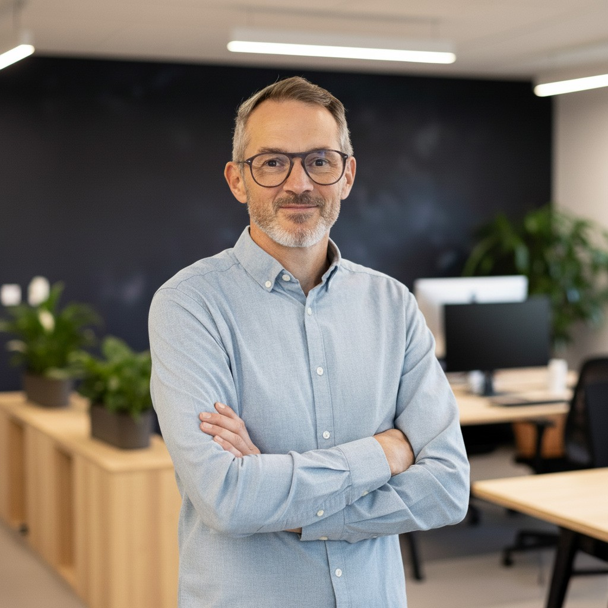
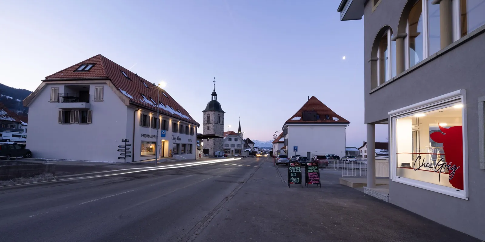
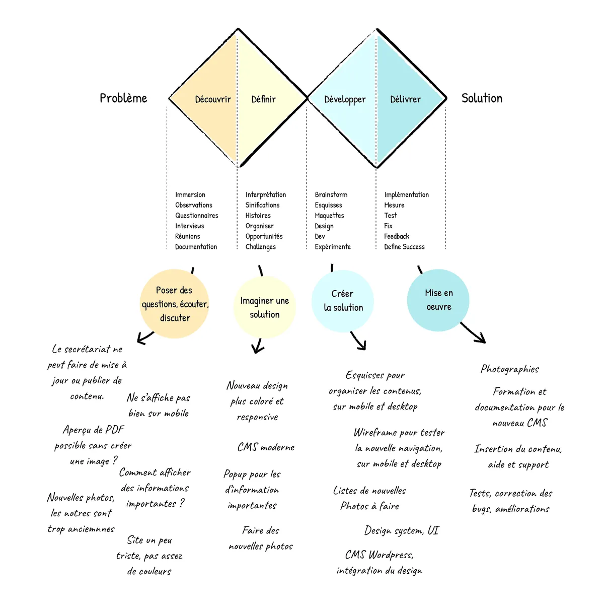
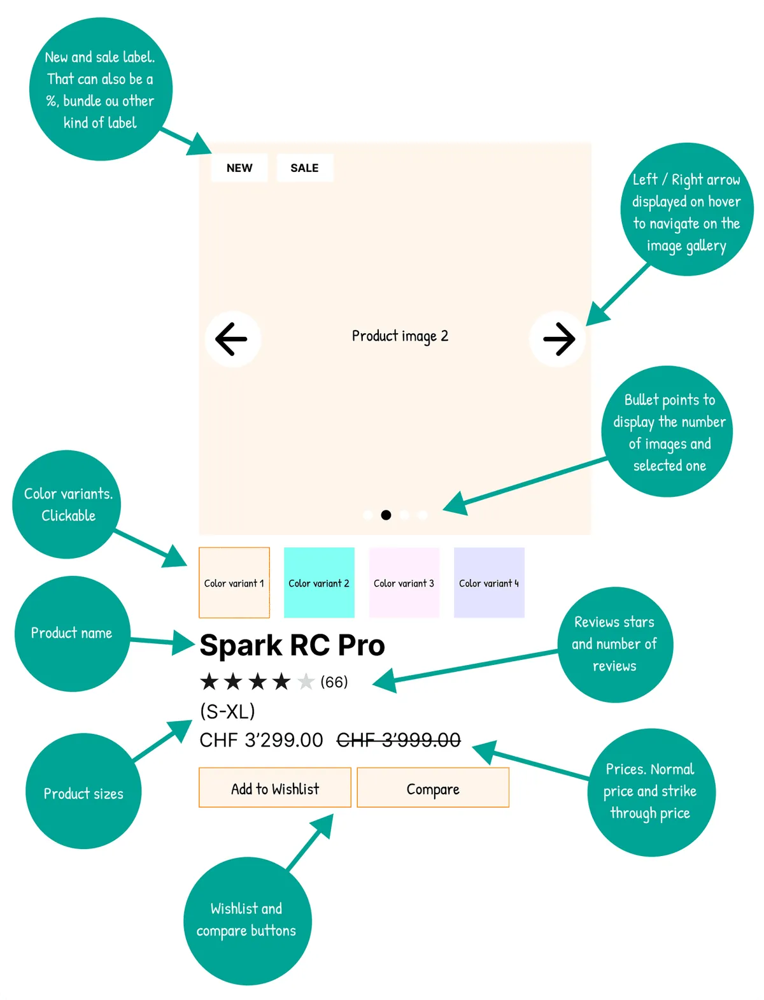
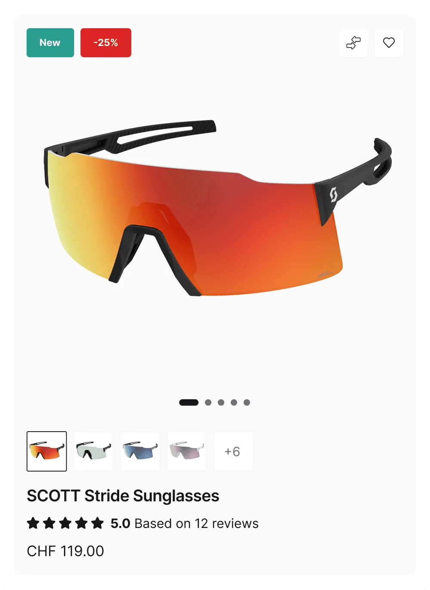
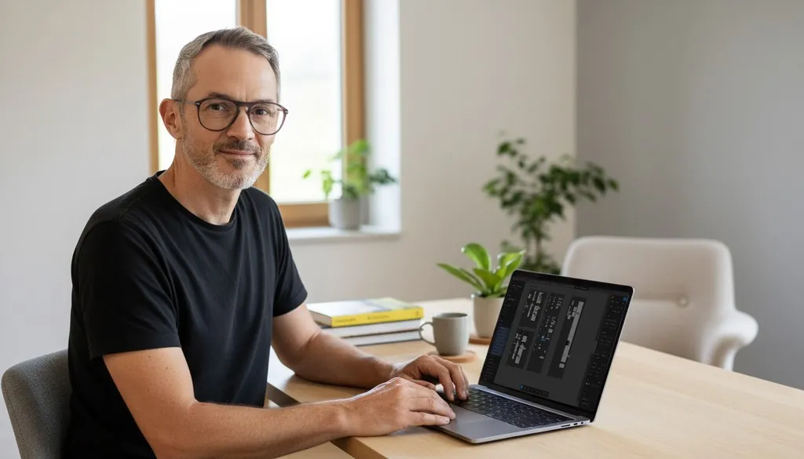
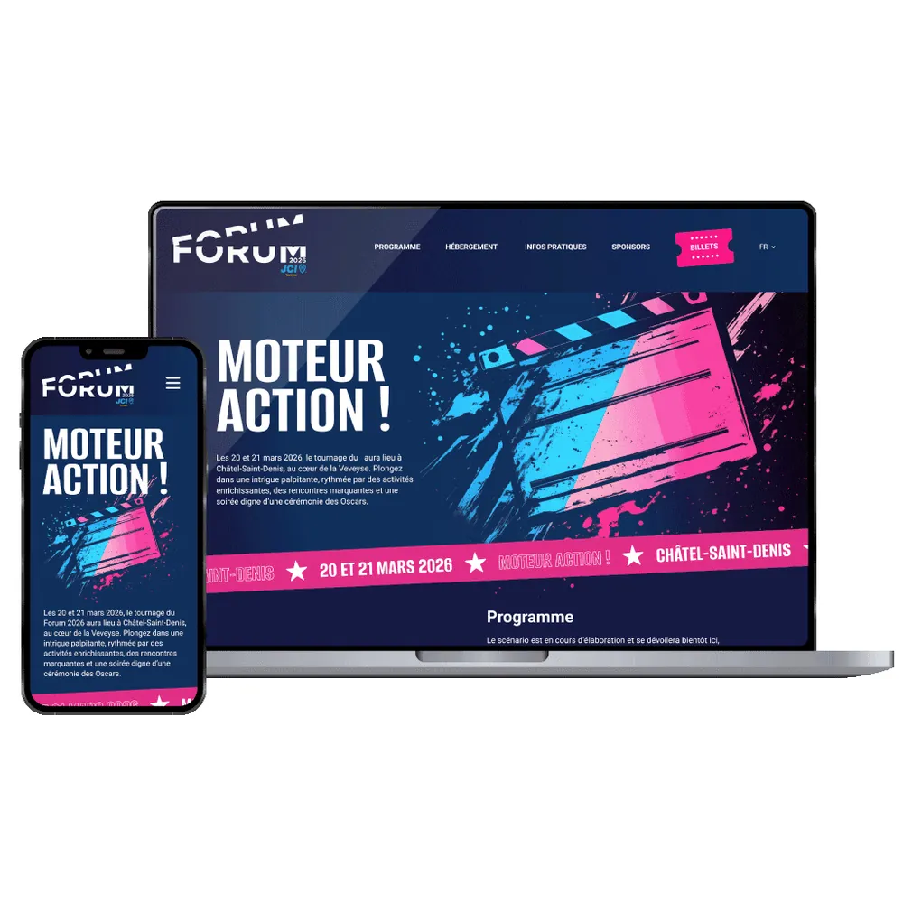
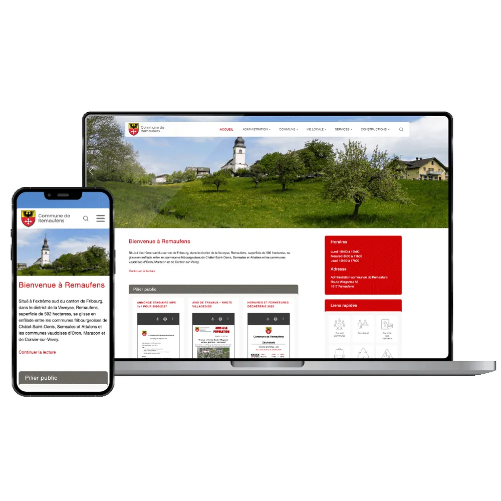
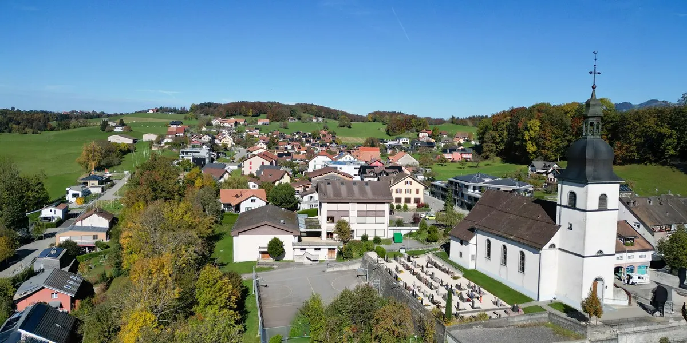

Sites internet · Veveyse et Suisse romande
Votre site internet, clair et professionnel.
Pour les entreprises et associations de la région : je crée votre site, je le mets en ligne et je m’en occupe ensuite. Communes, PME, artisans et sociétés locales me font déjà confiance.

Quelques clients récents
Communes, PME, associations et événements de la région : chaque projet reçoit la même exigence. Project Management, UX/UI Design et Frontend, du design au code avec Figma, React et WordPress.
- JCIS Forum 2026
- Commune de Remaufens
- Commune de Semsales
- Commune d’Attalens
- Commune de St-Martin
- Commune de Granges
- Commune de Bossonnens
- Hôtel Le Manoir
- Garage Girard
- J. Vuichard SA
- Fanfare L’Edelweiss
- Désalpe de Semsales
- MaudePhoto

Trois métiers, une seule vision. Parce qu’un bon projet digital se joue autant dans la stratégie que dans le pixel et la ligne de code.
-
Web Project Manager · Collaborer pour mieux concevoir
J’ai récemment obtenu le Diplôme fédéral de Web Project Manager, une formation exigeante qui m’a permis de renforcer ma vision stratégique, mes compétences en pilotage de projets digitaux, en coordination d’équipes et en marketing digital. Ce diplôme vient structurer et formaliser une pratique acquise sur le terrain, au contact de projets concrets et d’environnements exigeants.
PilotageCoordinationMarketing digitalDouble Diamond

-
UX UI Designer · Expériences digitales fluides
Je suis aussi UX/UI Expert chez Scott Sports, où je conçois des interfaces utilisées dans le monde entier. Particulièrement sensible à la clarté, à l’ergonomie, au rythme éditorial et à la qualité de l’expérience utilisateur, je crée des designs intuitifs et efficaces en utilisant des librairies de composants modernes afin d’accélérer le développement de l’interface. Les outils comme Figma ou Framer sont mes alliés quotidiens pour créer des prototypes rapides.
 FigmaFramerDesign systemsPrototypage
FigmaFramerDesign systemsPrototypage
-
Front End Developer · Aligner design et technique
Transformer une intention graphique en une interface fidèle, claire et cohérente, c’est ce que je préfère dans le développement frontend. J’ai travaillé sur des projets React et Next.js, et mis en place une librairie de composants avec Tailwind, Shadcn et Storybook. En parallèle, je développe des sites avec WordPress. Les thèmes sur mesure que je conçois sont basés sur le framework Underscores.
 React
React Next.js
Next.js Tailwind
Tailwind Storybook
Storybook WordPress
WordPress
Ma méthode, du besoin à la mise en ligne
- Comprendre
Entretiens, analyse de l’existant et recherche utilisateur.
01 - Structurer
Architecture de l’information et parcours clés.
02 - Prototyper
Wireframes et maquettes testées dans Figma ou Framer.
03 - Construire
Design system et développement front-end ou WordPress.
04 - Accompagner
Mise en ligne, formation et suivi après le lancement.
05

Des projets concrets, des résultats visibles.
- Un site pro pour les PME et associations
Nouveau · Sites vitrines. Hôtel, garage, menuiserie, photographe, fanfare… Sans frais de départ, en ligne en 2 semaines, aide à la saisie et mises à jour incluses.
CHF 100.– / mois - JCIS Forum 2026
Design UI · WordPress. Un univers graphique inspiré du cinéma, conçu et mis en ligne en à peine deux mois pour un événement national.
2 mois - Commune de Remaufens
Project management · UX · WordPress. Refonte complète du site officiel : des parcours simplifiés pour les habitants et une administration autonome.
Refonte




Un partenaire, pas un prestataire.
Écoute et proximité
Un interlocuteur unique, du premier rendez-vous à la mise en ligne, et un contact direct tout au long du projet.
Des délais tenus
Une organisation rigoureuse et des décisions rapides : le site du JCIS Forum 2026 a été livré en à peine deux mois.
Votre autonomie
Des outils simples et une formation pour gérer vos contenus sans dépendre d’intervenants externes.
L’exigence du détail
Clarté, ergonomie, rythme éditorial : chaque détail compte pour une expérience réussie.
J’ai beaucoup apprécié travailler avec Digitalgarage. Didier est à la fois efficace, minutieux et force de proposition. La communication a toujours été régulière et fluide, et les délais ont été scrupuleusement respectés. Je recommande vivement !
Responsable communication – JCIS Veveyse
La Commune de Remaufens a collaboré avec Didier Grand pour l’élaboration de son nouveau site internet. Efficace, patient et à l’écoute, il a su créer un site moderne et nous accompagner dans cette réalisation. Nous le recommandons vivement.
Secrétaire communale, Commune de Remaufens
